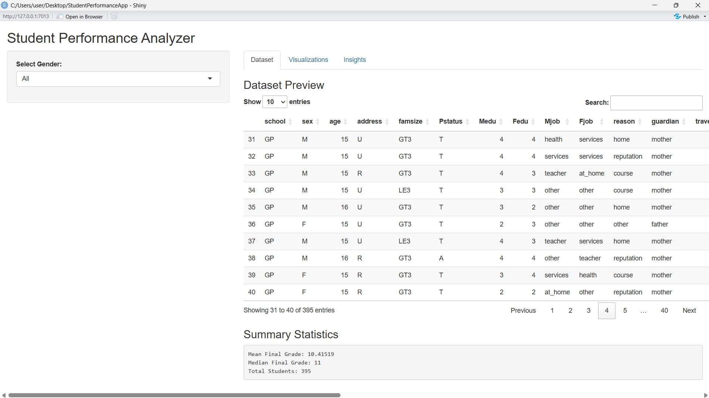
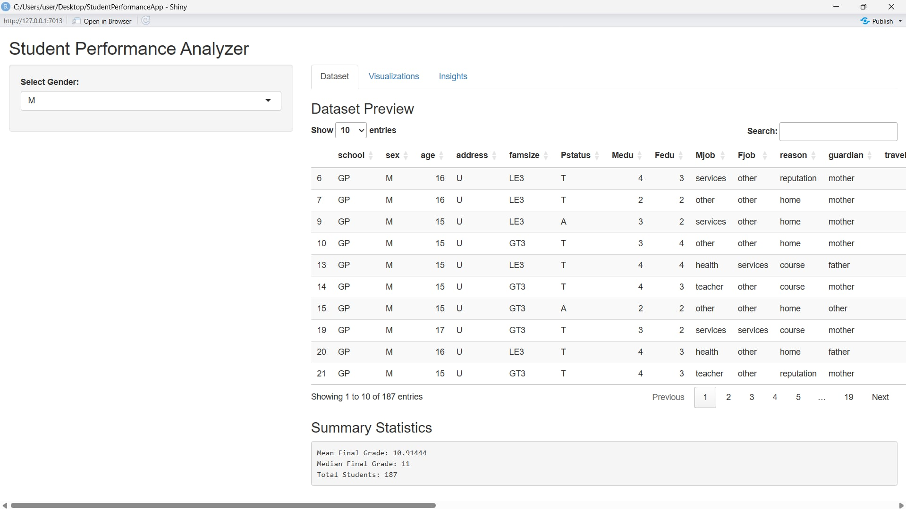
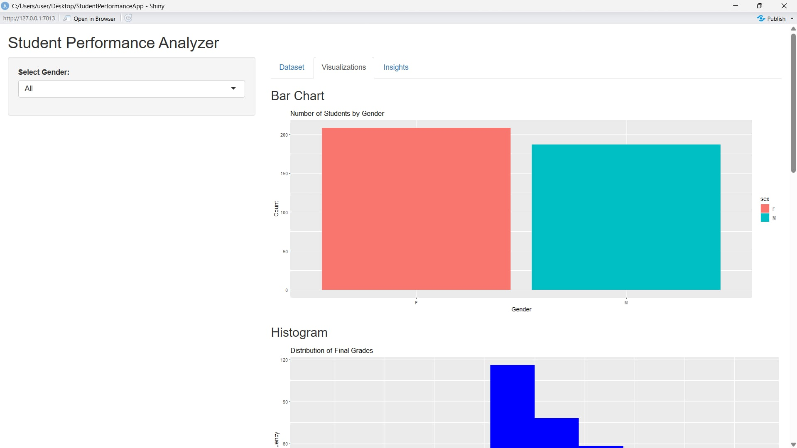
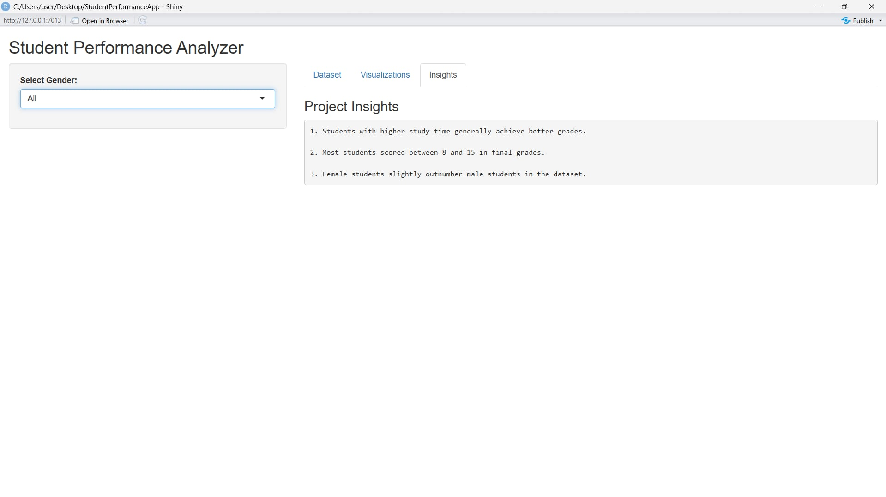
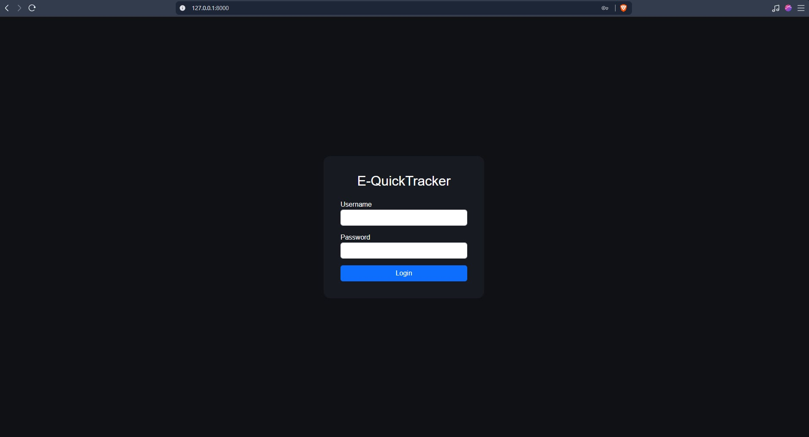
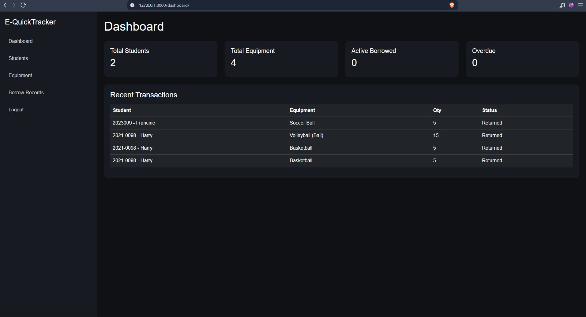
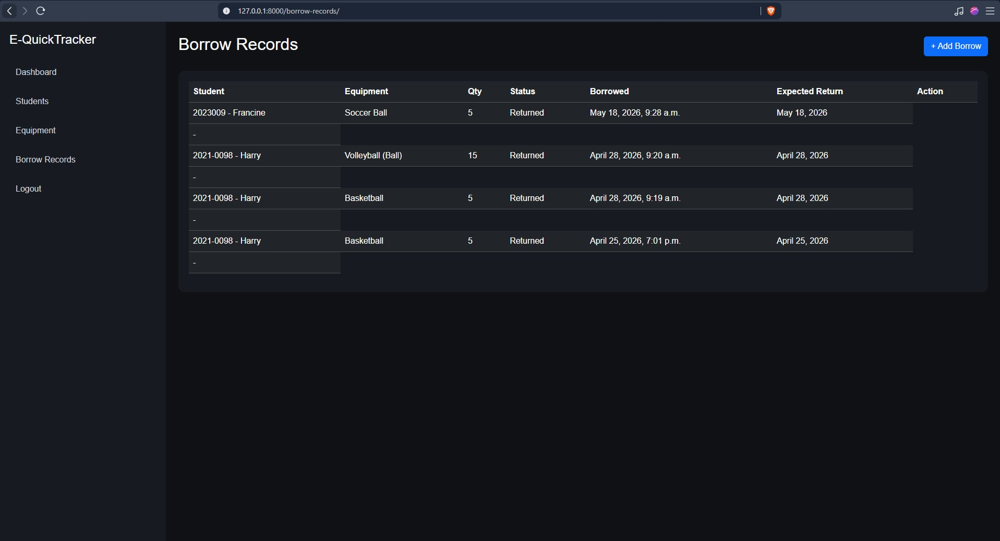
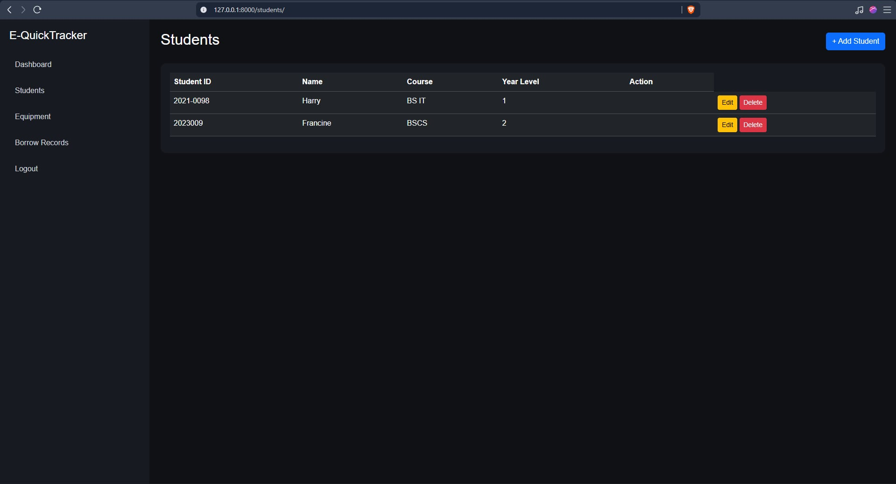

IT Student | Web Developer
I am an IT student passionate about building systems such as payroll and tracking applications. I enjoy solving real-world problems using web technologies and continuously improving my development skills.
Overview: An interactive data analytics application built using R Shiny to analyze student academic performance.
Problem: Analyzing large student datasets manually can be time-consuming and difficult to interpret.
Solution: The application provides interactive visualizations, dataset previews, and statistical insights to help users analyze student performance efficiently.
My Role: Developer responsible for designing the user interface, implementing data filtering, and creating visual analytics using R and Shiny.
Technologies Used: R, Shiny, ggplot2, DT
Features: Gender filtering, dataset preview, visual analytics, and statistical summaries.

Dataset Overview

Gender Filtering

Data Visualizations

Statistical Insights
Overview: A web-based equipment tracking system designed to monitor and manage equipment records efficiently.
Problem: Manual equipment monitoring can result in misplaced records, inaccurate tracking, and difficulty managing equipment availability.
Solution: The system digitalizes equipment management by organizing records, tracking availability, and simplifying monitoring processes for users.
My Role: Full-stack developer responsible for designing the interface, managing the database structure, and implementing backend functionalities.
Technologies Used: HTML, CSS, PHP, MySQL

Login Page

Dashboard

Borrow Records

Student Page
Email: benskyabdon8@gmail.com
GitHub: dosssssss
All projects presented in this portfolio are my original work. Any sensitive data used in these systems has been handled responsibly and is either anonymized or simulated for academic purposes.